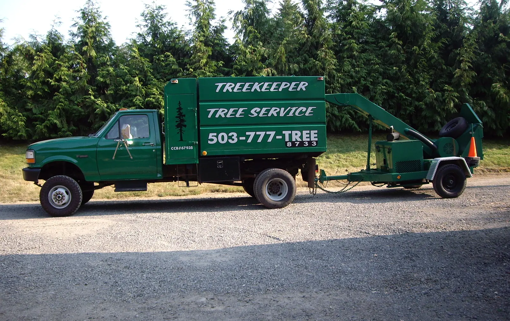
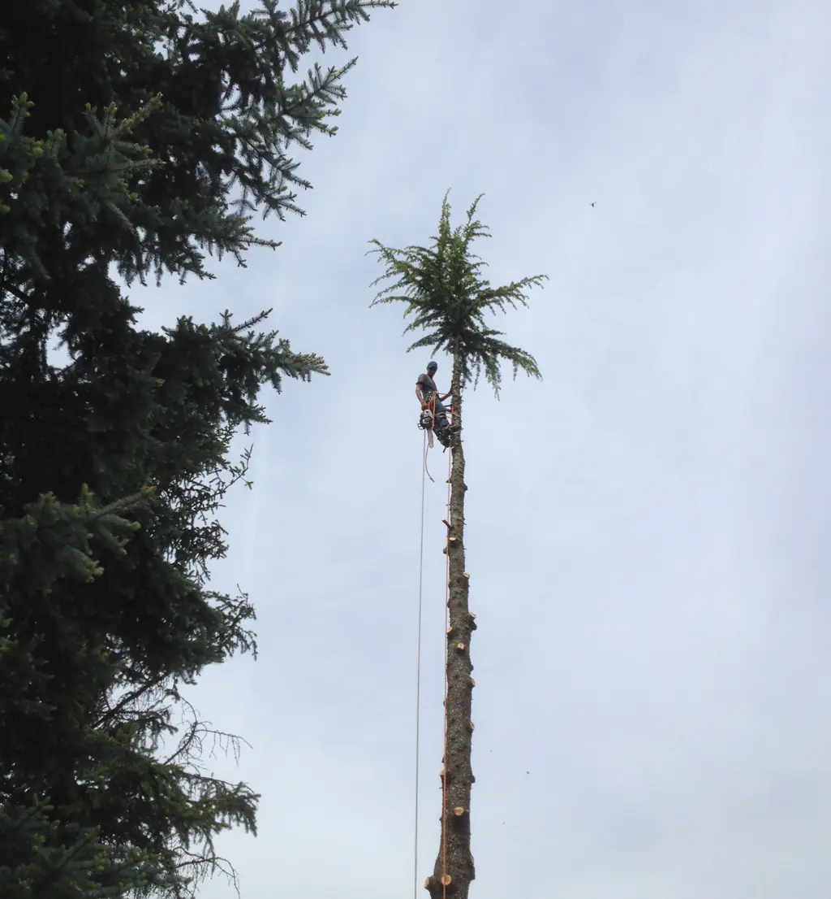
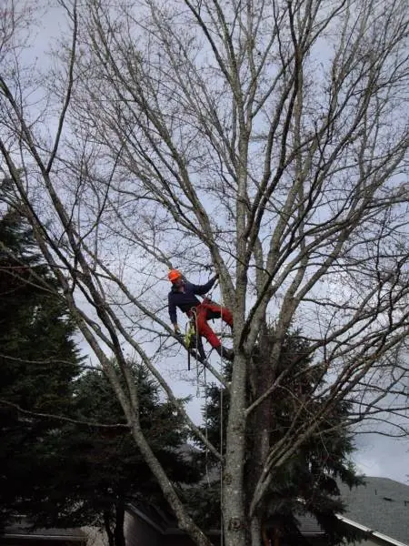
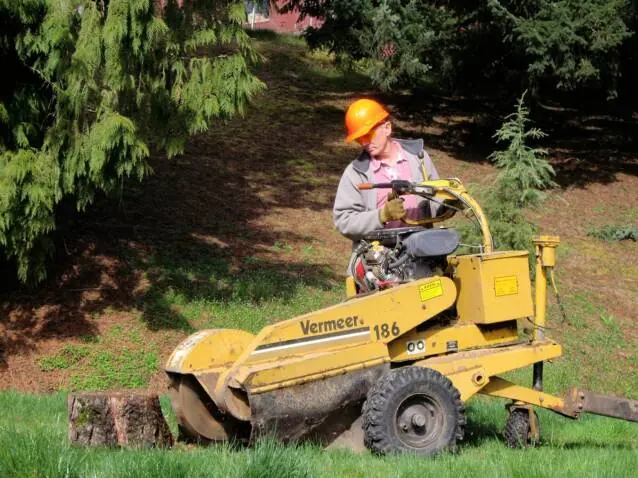
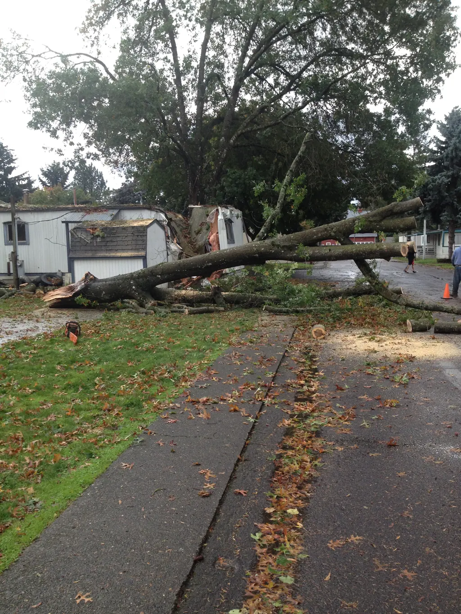

We Care About Your Trees
Tree removal, trimming and pruning, hedge trimming and stump grinding across the Portland metro area. Owner and ISA Certified Arborist Dan Sorenson. Licensed, bonded and insured.
- Serving Portland since 1985
- ISA Certified Arborist
- Licensed, bonded & insured
- 4.9 on Google
Tree services

Tree Removal
Trees of all sizes, including tight spots near homes and power lines.
Learn more →
Tree Trimming & Pruning
Pruned to ISA standards for health, safety and looks.
Learn more →
Hedge & Shrub Trimming
Overgrown laurels and hedges brought back under control.
Learn more →
Stump Grinding
Stumps ground up to 18 inches below grade.
Learn more →
Emergency Tree Removal
Storm damage and dangerous trees, when time is critical.
Learn more →
Tree Permits
Help with the permit rules in your city or county.
Learn more →What customers say
Dan and his team recently removed two trees from our property. They were very professional, efficient, informative, and quick. We appreciate and support great local business and would highly recommend.
Dan and his small crew did a great job getting my laurel hedge back under control after I let it get away from me. He was easy to get in touch with and get an estimate from. He came when he said he would and did excellent work, including a very thorough clean up.
Prompt response time, communicative, and quality work! My neighbor's tree was trimmed by another company and looked randomly chopped and butchered. Treekeeper, on the other hand, put thought into how best to trim my tree according to what I wanted.
I could not be more pleased with the work that was done on my extremely overgrown laurel hedge. Dan made sure to check in frequently and made recommendations around how to best support its growth and shaping in the future.
Dan and his crew have helped me with landscaping suggestions, maintenance, and resolving problems for years. Dan keeps me informed of the process and progress. He works quickly and efficiently. He makes sure the area is completely cleaned up and that I am satisfied with the work.
We are repeat customers of Treekeeper - they trim our giant laurel hedge perfectly and efficiently every time. Highly recommended
Dan Sorenson, ISA Certified Arborist
Treekeeper Tree Service Inc. was established in 1985 by Dan Sorenson, and has served the Portland metro area ever since. We are licensed, bonded and insured, Oregon CCB #67935.
Dan is an ISA Certified Arborist (#PN-0234A). To earn certification he passed a lengthy exam covering tree biology, plant health care, tree risk assessment and safety, and he keeps it up through continuing education.
We go out on a limb to provide customer satisfaction.
Areas we serve
- Portland
- Lake Oswego
- West Linn
- Tualatin
- Tigard
- Beaverton
- Hillsboro
- Gresham
- Gladstone
- Clackamas
- Oregon City
- Milwaukie
- Happy Valley
- Damascus
- Boring
- Sandy
- Troutdale
- Sherwood
- Canby
- Wilsonville
- Estacada
Our work

Tell Dan about your trees.
Tell us what you need done and where, and Dan will get back to you with a free, no-obligation quote. Or call (503) 998-6076.
- (503) 998-6076
- Treekeepertreeservice@gmail.com
- Oregon CCB #67935 · ISA Certified Arborist #PN-0234A · We accept credit card, check and cash (3% fee on credit cards)